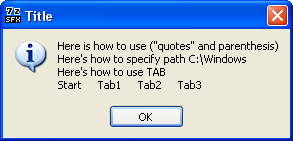

General information about the configuration file
This SFX module retains all the standard features described in the 7-zip manual and adds the new
features listed in this documentation.
- The config file MUST be saved in UTF-8 encoding.
- There are four ways to run programs packed into SFX: 'AutoInstall', 'AutoInstallX',
'RunProgram' and 'ExecuteFile'. You can use any and all parameters in the
configuration file simultaneously, but only one of them can be executed after the SFX launch.
- Parameters 'AutoInstall', 'AutoInstallX', 'RunProgram', 'Delete',
'SetEnvironment' and 'Shortcut' can appear in the config file unlimited number of
times. If there are several parameters of the same type, they are processed according to the order
of appearance in the config file.
- 'AutoInstall' can be launched by pressing "Yes/OK" while holding down the [Shift] key in
'BeginPrompt' window or from the command line. 'AutoInstallX' can be launched from
the command line only. 'ExecuteFile' and 'RunProgram' can be launched from the
config file only.
It is possible to specify both 'ExecuteFile' and 'RunProgram' parameters in the
config file, but this is not practical. 'ExecuteFile' parameter overrides any
'RunProgram' parameter. However, 'RunProgram' can be specified multiple times,
does not require additional switches, and therefore recommended for use in general.
- If you need to specify switches for 'ExecuteFile', use 'ExecuteParameters'
parameter. If switches are not needed, you can omit 'ExecuteParameters'.
- You can specify the path to the executable file in 'RunProgram'. You can also use
'Directory' parameter along with 'RunProgram' to specify the path (in that case
you typically specify only the executable file name in 'RunProgram'). 'Directory'
parameter is used along with the first 'RunProgram' only. 'Directory' is not a
required parameter; it can appear in the config file only once.
- Parameters 'ExecuteFile' and 'ExecuteParameters' as well as 'RunProgram'
and 'Directory' can appear anywhere in the config file.
- The way of running a program is determined by the following algorithm: if 'AutoInstall'
([Shift], command line) or 'AutoInstallX' (command line) are specified, they will be used.
Otherwise, 'ExecuteFile' presence is checked, and it is used if found (all
'RunProgram' parameters will be ignored). If ExecuteFile' is not present,
then 'RunProgram' presence is checked.
- File associations are working, i. e. you can specify RunProgram="Setup.msi" without using StartX.exe,
msistub.exe or other supplementary tools.
- If 'RunProgram', 'ExecuteFile', 'AutoInstall' or 'AutoInstallX'
are not present, and the archive is being extracted to a temp folder ('InstallPath' is not
present), an attempt will be made to launch "setup.exe" (if such a file is found in the root of the
archive).
- The file you need to execute after the extraction does not have to be placed in the root of archive.
The search sequence is as follows: extraction folder first, then paths specified in the %PATH%
environment variable.
IMPORTANT! Certain two-symbol sequences in the Value are parsed as follows:
- \\ = \
- \" = "
- \n = caret return
- \t = tabulation (TAB)
As a result, you MUST use DOUBLE backslashes (\\) wherever you normally use
backslashes (\) (e.g. in paths or dialog texts). Similarly, if the Value contains double
quotes ("), you MUST precede them with a backslash (\").
In addition to the regular environment variables (%SYSTEMDRIVE%, %PROGRAMFILES%, etc),
during the module operation the environment variables defined by user in 'SetEnvironment'
parameters are available as well as extra variables pointing to the following folders on the hard drive:
- %CommonDesktop% - Desktop for ALL users
- %CommonDocuments% - COMMON documents
- %MyDocuments% - "My Documents" folder for the CURRENT user (same as %MyDocs%)
- %UserDesktop% - Desktop for the CURRENT user
The variables listed above can be used in the module parameters as well as in other executables
(.cmd, .bat files) launched from the module.
In addition, you can use the following module variables (only in the module parameters, but not in
other programs launched from the module):
- %%S - full path to the SFX archive file
- %%T - full extraction path
All environment variables will be expanded in the following parameters:
- 'AutoInstall'
- 'AutoInstallX'
- 'Delete'
- 'Directory'
- 'ExecuteFile'
- 'InstallPath' (with the exception of %%T and variables defined in 'SetEnvironment',
if %%T is used in any of them)
- 'RunProgram'
- 'string' option of 'SetEnvironment' parameter
Only the module variables %CommonDesktop%, %CommonDocuments%, %MyDocuments%, %MyDocs%, %UserDesktop%,
%%T and %%S as well as the variables defined in 'SetEnvironment' will be expanded (replaced
with variable value) in the following options of the 'Shortcut' parameter:
- 'icon_file'
- 'src_file_path'
Environment variables are not expanded and treated as text strings in all other parameters.
The module also supports relative paths in the parameters and switches listed below:
- 'AutoInstall', 'AutoInstallX', 'Directory', 'ExecuteFile',
'RunProgram' - relative to the extraction folder.
- 'InstallPath', '-sfxconfig' - relative to the folder from which the SFX was launched
ATTENTION! This is not necessarily the folder where SFX is stored. If SFX is launched from
another program (.bat, .cmd, etc), the program's folder becomes the current one.
- 'Delete' - relative to the folder where SFX is stored.
For 'RunProgram' and all 'AutoInstall' parameters you CAN/MUST
enclose the path to the executable along with its name in quotes.
You CAN do so, even if the path and file name DO NOT contain spaces. You MUST do so, if
the path or/and file name CONTAIN spaces. This is due to the fact that the full path is formed AFTER
expanding the variables. For instance,
RunProgram="nowait:%ProgramFiles%\\test.exe /s"
In this string file name and its path do not contain spaces; however, after expanding the %ProgramFiles%
variable the full path may contain spaces (i.e. C:\Program Files). Therefore, it is recommended to
always enclose the path and file name in quotes:
RunProgram="nowait:\"%ProgramFiles%\\test.exe\" /s"
Prefixes and executable file command line switches DO NOT need extra quotes.
Extra quotes are not required for 'ExecuteFile' parameter even when the path contains spaces
(this is because this parameter does not contain command line switches). Thus, the previous example
can be rewriten as follows:
ExecuteFile="nowait:%ProgramFiles%\\test.exe"
ExecuteParameters="/s"
Multiple lines of text are allowed in dialog windows controlled by the following parameters:
- 'BeginPrompt'
- 'CancelPrompt'
- 'ExtractDialogText'
- 'ExtractPathText'
- 'FinishMessage'
- 'HelpText'
Any symbols can be used in text. Slashes (\) and quotes (") are subject to the "Leading Slash" rule
(see above). For example, having the following text in the config file:
HelpText="Here is how to use (\"quotes\" and parenthesis)\nHere's how to specify path C:\\Windows\nHere's how to use TAB\nStart\tTab1\tTab2\tTab3"
produces the output shown below:

The dialog window dimensions are adjusted automatically according to the number of strings and their
lengths. Do not make the lines too long, because the window may get out of the screen range with no
scroll bar provided  .
.
You can cancel the SFX operation by:
- Clicking "No" or "Cancel" buttons, if they are made available via the config file
- Clicking "Close" button (upper right corner of the window), unless the button is blocked by
'GUIMode' parameter or by '-gmX' command line switch with the value of 1
- Clicking 'ExtractCancelText' button in the extraction dialog, unless the button is blocked
by 'GUIMode' parameter or by command line switch '-gmX' with the value of 1
- Pressing [Esc] key on the keybord (will not work if 'GUIMode' parameter specified in the
config file or '-gmX' switch have the value of 1)
Any of the above actions will cause the cancel prompt to appear, if it is permitted by 'GUIFlags'
parmeter with the value of 256. The cancel prompt text can be customized with 'CancelPrompt'
parameter. This prompt will NOT be displayed in the error message windows and windows defined by
'FinishMessage' and 'HelpText' parameters.